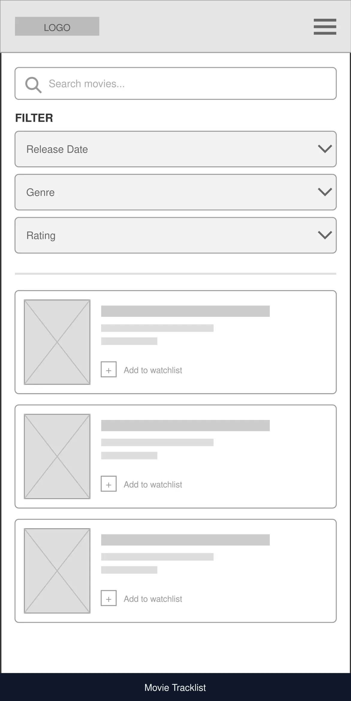
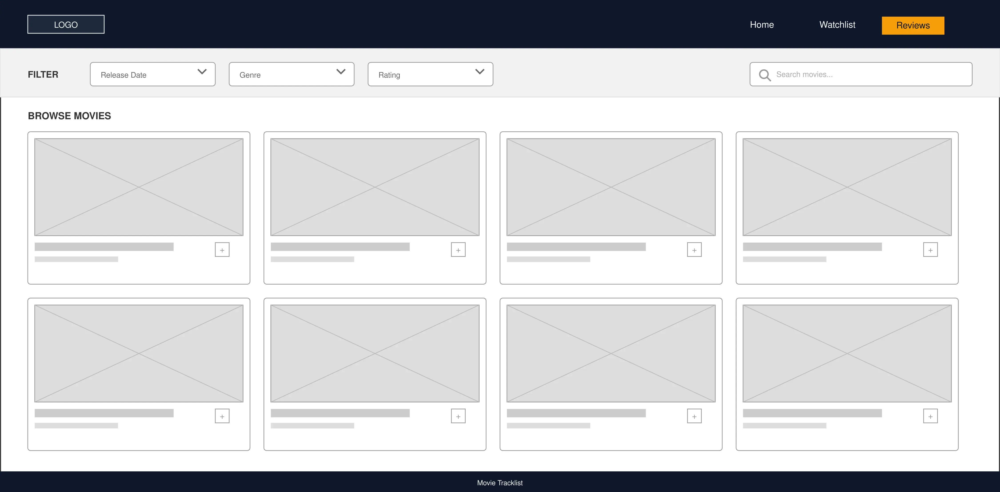

Site Overview
Site Name
Name: Movie Tracklist
Description: I chose this name because it clearly communicates the web application's primary purpose: allowing movie lovers to track, organize, and manage their film viewing habits, watchlists, and personal reviews.
Site Purpose
The purpose of Movie Tracklist is to provide users with a centralized, interactive web application to browse
movie data, curate a personalized watchlist, and log detailed ratings and reviews. The home page allows users to
dynamically filter titles using JavaScript by release date, genre, and rating. The second page manages a watchlist
stored in localStorage, while the third page provides a review form where users can submit ratings,
log custom notes, and view saved feedback.
Scenarios
- Scenario 1: How can I filter movies to discover highly rated sci-fi films released in recent years?
- Scenario 2: How do I add movies to my personal watchlist and ensure they remain saved when I close or refresh my browser?
- Scenario 3: Where can I log my personal review and rating for a movie I just finished watching, and where will those notes be saved?
Branding
Website Logo
Style Guide
Color Palette
Palette URL:
https://coolors.co/0f172a-f59e0b-1e293b-f8fafc| Primary | Secondary (Accent) | Accent 1 | Accent 2 |
|---|---|---|---|
| #0F172A | #F59E0B | #1E293B | #F8FAFC |
Typography
Heading Font: Montserrat
Used for site titles, section headings (<h1>, <h2>,
<h3>), and movie card titles to give the web app a modern, cinematic aesthetic.
Paragraph Font: Open Sans
Used for body text, movie summaries, form labels, input fields, and user review notes to maximize readability across mobile and desktop devices.
Normal paragraph example
Movie Tracklist allows film enthusiasts to easily search, filter, and organize their favorite movies. Browse by release year, filter by genre, or sort by top user ratings all in one place.
Colored paragraph example
Keep track of your cinema journey! Add upcoming releases to your personal watchlist saved in local storage, and log your custom ratings and review notes after every watch party.
Navigation
Site Map
Wireframes
Mobile View Wireframe
Single-column layout with stacked filter options, full-width movie cards, and direct touch navigation.

Desktop View Wireframe
Multi-column responsive grid layout with a sticky header navbar, horizontal filter controls, and side-by-side review forms.
